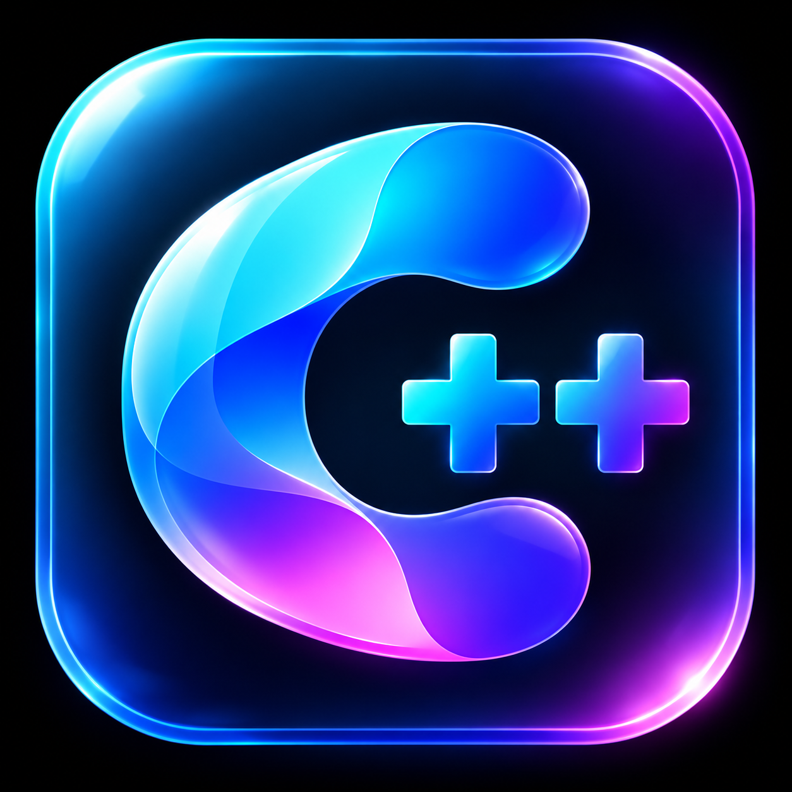

CASPR++
Jouw schooldag, jouw stijl.
Uiterlijk
Loginthema inschakelen
Thema
Aurora · zacht paars
Midnight · donker
Sunrise · warm
Forest · rustig groen
Splashteksten tonen
Dashboard & widgets
Leerlingthema inschakelen
Welkom, klok en snelkoppelingen
Widgets op je startpagina
Welkom en humor
Klok en datum
Snelkoppelingen
Glaseffect (vervaagde achtergrond)
Doorzichtigheid:
35%
Eigen fotoachtergrond (lokaal opgeslagen)
Foto verwijderen
Les & afteller
Humoristische afteller
Naam van je afteller
Doelmoment (leeg = einde laatste les)
Volgende les
Widgets opslaan